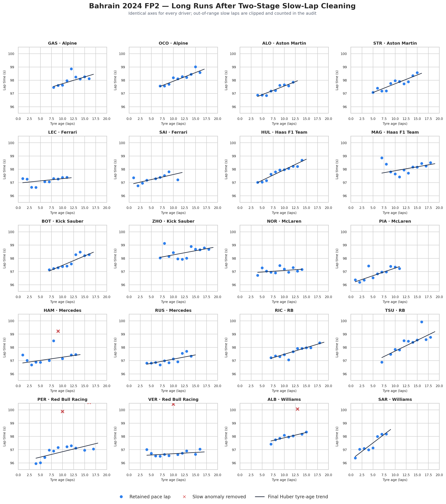
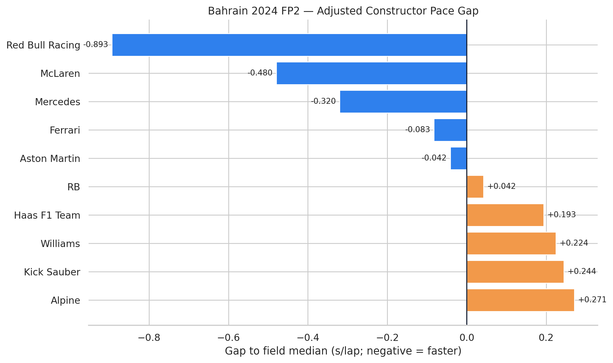
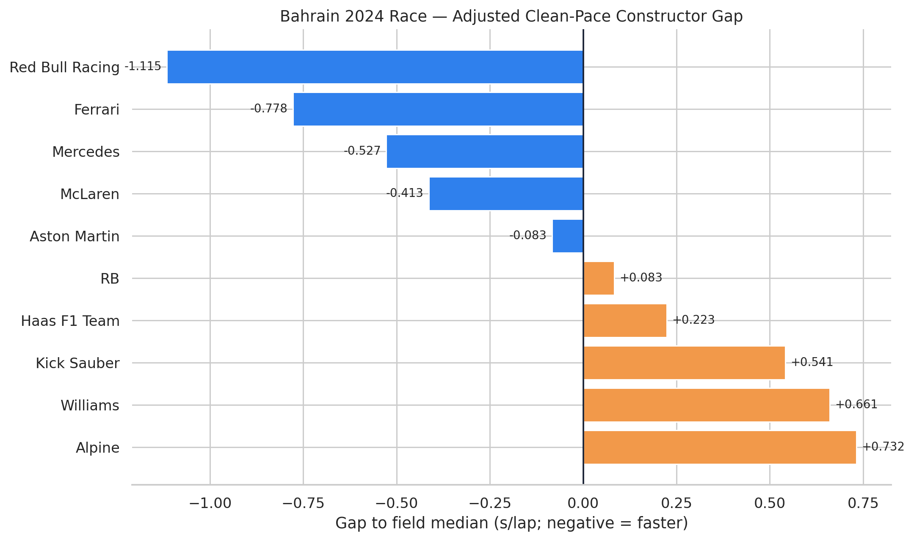
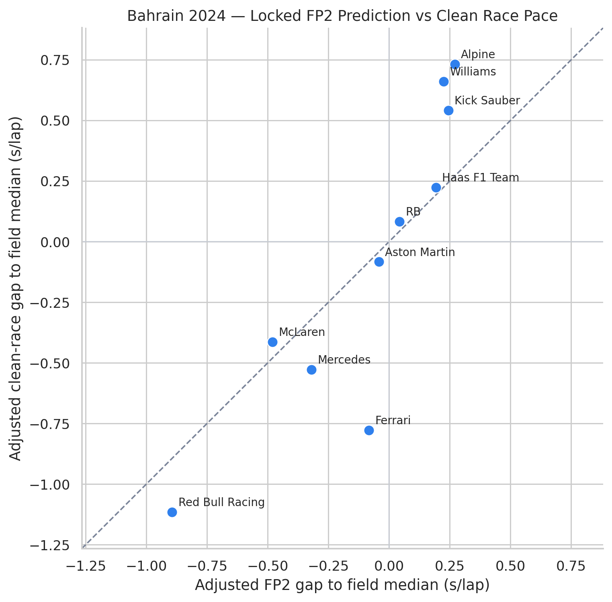

F1 PACE ANALYSIS · CASE 04 · BAHRAIN 2024 PILOT
From Friday to Sunday: Does FP2 Long-Run Pace Predict Formula 1 Race Pace?
A Bahrain 2024 methodology pilot using publicly available OpenF1 timing data.
Independent analysis using publicly available data. Not affiliated with Formula 1 or any Formula 1 team.
- Predictive modelling
- Race pace
- Robust regression
- Traffic filtering
Key results
The Bahrain validation in six measures
The locked FP2 model closely tracked the independently constructed clean-race estimate in this pilot, while retaining meaningful error and one clear constructor-level miss.
- Pearson correlation
- 0.884
- Spearman correlation
- 0.939
- Mean absolute error
- 0.250 s/lap
- RMSE
- 0.328 s/lap
- Pairwise ranking accuracy
- 91.1%
- Top-three overlap
- 2/3
Research question
Can Friday long-run pace predict Sunday’s competitive order?
This project tests whether adjusted FP2 long-run pace predicts adjusted clean-air race pace and competitive order. The FP2 prediction was locked before the race sample was constructed, keeping the race analysis as an independent validation rather than allowing Sunday’s result to reshape the Friday model.
Data and cleaning pipeline
Two independently audited pace samples
Public timing feeds were filtered into one representative FP2 long run per driver and a separate clean-race sample, with each exclusion preserved in the audit trail.
- Source data OpenF1 supplied lap, stint, tyre, weather, race-control, position and interval data
- FP2 sample One genuine FP2 long run selected for each of the 20 drivers
- Lap audit Pit laps, incomplete laps, interruptions, anomalously slow laps and observable traffic audited
- Race traffic Official interval-to-car-ahead feed used for the race sample
- Exclusions Every exclusion reason recorded
- Final race model The final race model retained 539 laps across 39 stints, 20 drivers and 10 constructors

Adjusted FP2 prediction
Red Bull led the locked Friday estimate
Negative values indicate faster-than-field-median adjusted pace. The FP2 model predicted Red Bull first, followed by McLaren and Mercedes.

Adjusted clean-race pace
Sunday’s independent model moved Ferrari to second
The independently constructed race model ranked Red Bull first, Ferrari second, Mercedes third and McLaren fourth.

Prediction validation
Strong ordering signal, with Ferrari as the largest miss
The validation supports a strong Bahrain relationship between the locked Friday prediction and clean Sunday pace, but it does not show that FP2 predicted the race perfectly.
-
Fastest constructor identified
FP2 identified Red Bull as the fastest constructor.
-
Largest miss
Ferrari was predicted fourth in FP2 but ranked second in clean race pace.
-
Broad order retained
Eight of the ten constructors remained very close to the broad predicted competitive ordering.
-
Pairwise accuracy
Pairwise ordering accuracy was 91.1%.

Robustness
The ordering survived a tighter race-traffic boundary
Tightening the race-traffic boundary from 2.0 to 1.5 seconds produced a larger retained sample while leaving the main competitive ordering and validation result close to the primary estimate.
- Retained laps
- 539 → 603Increase under the 1.5-second boundary.
- Smallest driver sample
- 5 → 13Minimum retained laps across drivers.
- Race-order stability
- 0.988Spearman correlation versus the primary race estimate.
- Validation Spearman
- 0.939 → 0.927Primary estimate versus the tighter-boundary result.
- Mean absolute error
- 0.250 → 0.270 s/lapPrimary estimate versus the tighter-boundary result.
Limitations
What this pilot cannot establish
The result is a relative constructor-level validation for one event, not a general claim that practice pace will predict every race.
- FP2 fuel loads are unobservable.
- Fuel burn and tyre degradation cannot be perfectly separated.
- FP2 traffic detection relies on approximate location data.
- The result covers only Bahrain 2024.
- Bahrain’s closely matched evening FP2 and race conditions may make it unusually favourable.
- The outputs are relative constructor gaps, not predictions of absolute lap time.